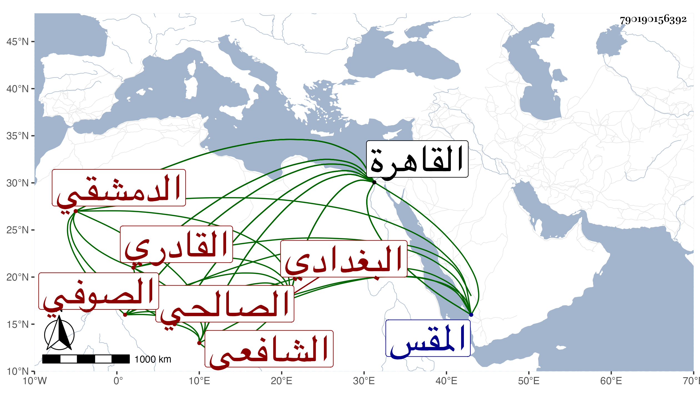

0902Sakhawi.DawLamic.ITO20230111-ara1.EIS1600.790190156392
Biography ID: 790190156392
644
محمد بن سلمان بن محمد الشمس البغدادي الأصل الدمشقي الصالحي الشافعي الصوفي القادري نزيل القاهرة . ولد في حدود الخمسين وسبعمائة وحفظ القرآن وغيره ، وعرض بعض محفوظاته في سنة خمس وستين على العماد الحسباني وأجاز له ، وطلب العلم ولازم التاج السبكي وفتح الدين بن الشهيد والعماد ابن كثير وسمع منه مصنفه في علوم الحديث وفي فضل الجهاد وكتب له إجازة حسنة وسمع على أبي عبد الله بن جابر وأبي جعفر الغرناطي البديعية وشرحها بل والشاطبية بقراءة ابن الجزري ورافقه على عدة مشايخ وكذا رافق الجلال بن خطيب داريا وتخصص به وكتب عنه أكثر شعره، قال شيخنا في معجمه : وكان حسن الأدراك في وزن الأدب كثير المحفوظ للشعر خصوصا الحكم وذكر لي أنه صحب شخصا يقال له عبد الوهاب فسلكه ، ثم سكن القاهرة بعد الثمانين واستمر بها حتى مات في شوال سنة عشرين ، وكان في أكثر أحواله ضيق اليد وربما تكسب من الكتب ، أجاز في استدعاء ابني محمد . قلت في سنة موته ووصفه بعضهم بالصوفي شيخ زاوية ناصر الدين الحمصي بجوار الدكة من المقس كان ، ورأيت بخطه قطعة من تهذيب النفوس للسعودي الحنفي ووصف نفسه بالصوفي بسعيد السعداء وشيخ رباط الحمصي بجوار الدكة من ضواحي القاهرة ، وأرخ كتابته له في سنة إحدى عشرة وإن ولايته للمشيخة عقب احتراق يوسف ابن عبد القادر الحنبلي رحمه الله .
